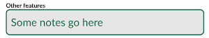
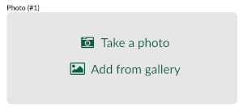

Setting up forms
Note: You can follow the examples in this section by cloning the following projects:
When capturing geo-data, it is often required to fill in a form related to the surveyed point, line or area. The forms set up can simplifying filling the data and can also ensure the correct information is populated.
Widget types
Input supports a number of edit widget types for forms such as: drop-down options, slider, date and time, checkbox, photos.
Setting up forms can be configured using QGIS widget types.
In the sections below, we go through examples of setting up different widgets for forms in QGIS and Input:
| QGIS edit widget name | Description | Preview in Input |
|---|---|---|
| Text Edit | Text |  |
| QR & barcode scanner | Camera to scan QR and barcode | |
| Range | Numeric field |  |
| Range | Slider |  |
| Date&Time | Calendar with time | |
| Attachment | Photos from device’s camera or gallery |  |
| Checkbox | Checkbox | |
| Value Map | Drop-down menu with pre-defined values |  |
| Value Relation | Drop-down menu with values from another table |
Advanced form setup
In addition to the edit widgets, extra configuration can be done to the fields and form layout to make the data collection easier and more consistent. For example: setting a default value, conditional visibility and constraint enforcemnt.
Form layout
To have multiple tabs with subgroups in your form (with conditional visibility) see form layout setup:

Default value
To have pre-populated values within the field (e.g. name of the surveyor, date/time of the survey, latitude and longitude of the feature), see defaults in forms:

Constraints
To enforce constraints on a field in your forms, visit constraints setup
Advanced value relation with drill-down forms
To have a more advanced form with drill-down menu option, see cascade form setup
QR code reader
To be able to use your camera in forms to scan QR codes and populate the text in the field, see QR code reader